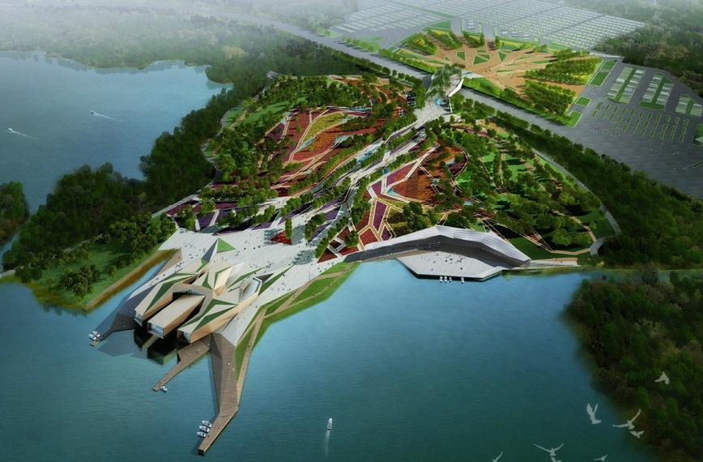

佟晓威
佟晓威先生曾就职于福斯特及其合伙人设计事务所( Foster+Partners)， FOA建筑师事务所。他曾经担任英国Plasma Studio中国区首席代表。他在欧洲和亚洲的一系列大型的建筑开发项目中担任重要角色，这些项目包括丹麦海港住宅区，伦敦奥林匹克公园，泉州现代艺术馆等。他是中旭数字建筑工作室创始人和主持建筑师。他从英国建筑联盟(Architectural Associate) 建筑学硕士学位，从北京建筑工程学院取得建筑学学士。
图：西安世界园艺博览会标志性建筑
图：西安世界园艺博览会标志性建筑